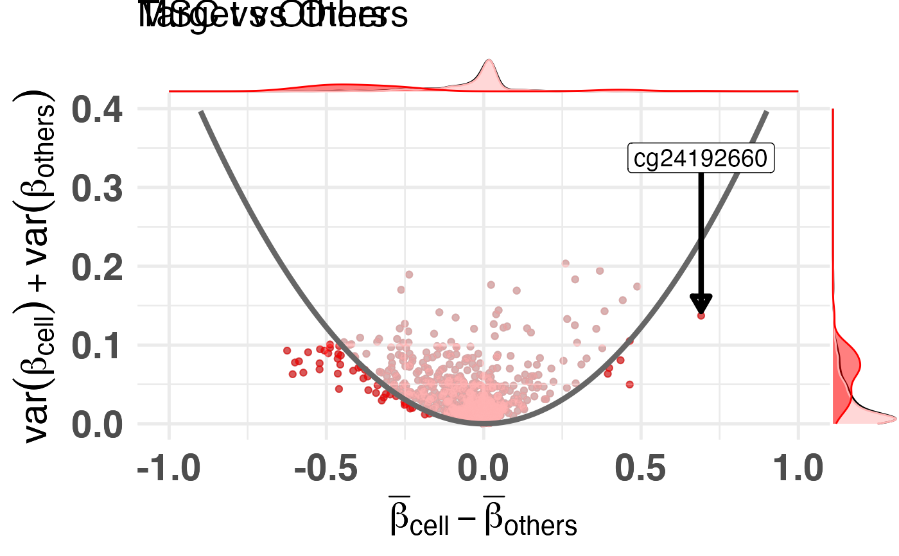

R/plot.R
diffmeans_sumvariance_plot.RdRepresent CpGs in the difference in means, sum of variances space. This plot is often used to select CpGs that would be good classifiers. These CpGs are often located on the bottom left and bottom right of this plot.
diffmeans_sumvariance_plot(
data,
xcol = "diff_means",
ycol = "sum_variance",
feature_id_col = "id",
is_feature_selected_col = NULL,
label_var1 = "Target",
label_var2 = "Others",
target_vector = NULL,
mean_cutoff = NULL,
var_cutoff = NULL,
threshold_func = NULL,
func_factor = NULL,
feats_to_highlight = NULL,
cpg_ranking_df = NULL,
color_all_points = NULL,
pltDensity = TRUE,
density_type = c("density", "histogram", "boxplot", "violin", "densigram"),
plot_dir = NULL,
id_tag = NULL,
file_tag = NULL,
custom_mods = FALSE
)Data to create difference in means, sum of variances plot. Either a data.frame with `xcol`,`ycol` and `feature_id_col` or, if `target_vector` is not `NULL` a matrix with beta values from which, given the target, the difference in means between the target and others, and the sum of variances within the target and others will be calculated.
Column with x-axis data
Column with y-axis data
Column with the feature ID
NULL or column with TRUE/FALSE for features which should be highlighted as selected
Label of the target class
Label of the other classes
if not NULL a vector target class assignment, see data
a numeric draw mean cutoff at given position
a numeric draw variance cutoff at given position
TODO
TODO
TODO
TODO
TODO
TODO
TODO
TODO
TODO
TODO
TODO
library("CimpleG")
# read data
data(train_data)
data(train_targets)
# make basic plot
plt <- diffmeans_sumvariance_plot(
train_data,
target_vector = train_targets$CELL_TYPE_MSCORFIBRO == 1
)
print(plt)
# make plot with parabola, colored and highlighted features
df_dmeansvar <- compute_diffmeans_sumvar(
train_data,
target_vector = train_targets$CELL_TYPE_MSCORFIBRO==1
)
parab_param <- .7
df_dmeansvar$is_selected <- select_features(
x = df_dmeansvar$diff_means,
y = df_dmeansvar$sum_variance,
a = parab_param
)
plt <- diffmeans_sumvariance_plot(
data=df_dmeansvar,
label_var1="MSC",
color_all_points="red",
is_feature_selected_col="is_selected",
feats_to_highlight=c("cg24192660"),
threshold_func=function(x,a) (a*x)^2,
func_factor=parab_param
)
#> Warning: Use of `sp_df$x` is discouraged. Use `x` instead.
#> Warning: Use of `sp_df$x` is discouraged. Use `x` instead.
#> Warning: Removed 10 row(s) containing missing values (geom_path).
#> Warning: Removed 1 rows containing missing values (geom_label).
#> Warning: Removed 1 rows containing missing values (geom_label_repel).
#> Warning: Use of `sp_df$x` is discouraged. Use `x` instead.
#> Warning: Removed 10 row(s) containing missing values (geom_path).
#> Warning: Removed 1 rows containing missing values (geom_label).
#> Warning: Removed 1 rows containing missing values (geom_label_repel).
#> Warning: Use of `sp_df$x` is discouraged. Use `x` instead.
#> Warning: Use of `sp_df$x` is discouraged. Use `x` instead.
#> Warning: Removed 10 row(s) containing missing values (geom_path).
#> Warning: Removed 1 rows containing missing values (geom_label_repel).
#> Warning: Use of `sp_df$x` is discouraged. Use `x` instead.
#> Warning: Removed 10 row(s) containing missing values (geom_path).
#> Warning: Removed 1 rows containing missing values (geom_label_repel).
print(plt)
